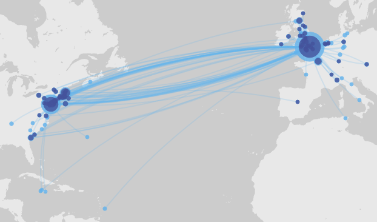

surveys ...
Annotated Historical Maps ...
Conflict Simulations ... War Gaming
http://www.kcl.ac.uk/sspp/departments/warstudies/people/professors/sabin/consim.aspxFiveThirtyEight examples http://projects.fivethirtyeight.com/2016-swing-the-election/
Social network analysis... NodeXL. Breaking the social media bubbles...
Spreadsheets ... One of the most useful tools to come out of the Information Age, I wish more people in this world recognized the immense power
Google Maps ...
Annotated Historical Maps ... map of DC as it relates to Dan Brown's ????...
chatbot...
Here's an example from the emerging field of Digital Humanitites. The Stanford project "Mapping the Republic of Letters" uses software similar to that I used to map my social networks to visualize the web of connections formed in the correspondence of historical figures like Benjamin Franklin and Voltaire (Stanford, 2013). A geographic visualization of Franklin's correspodence between 1757 and 1775, over 3,000 letters sent and received,

Benjamin Franklin Papers: The London Decades (Arcenas and Winterer, 2016)
Stanford University (2013). Mapping the Republic of Letters. Retrieved on 2017-08-15 from http://republicofletters.stanford.edu/ Claire Arcenas and Caroline Winterer (2016). Benjamin Franklin's Correspondence Network (1757-1775): Letters. Stanford Digital Repository. Available at http://republicofletters.stanford.edu/publications/franklin/papers/